Dr. Emmanuel França
DermatologistaCRM 5999 · RQE 636
Sentir-se bem, física e mentalmente, é fantástico. A pele reflete isto.
ConhecerRecife · RioMar Trade Center · 19º andar
A experiência e a tecnologia se encontram para trazer uma estrutura clínica nunca vista no Recife quando o assunto é dermatologia, estética, nutrição e saúde.
Mapa facial
Toque nos pontos do rosto para ver os tratamentos de cada região.
Mapa facial interativo · toque nos pontos do rosto
Explore
Escolha a região e o objetivo para ver os tratamentos relacionados que a clínica oferece. A indicação certa é definida em consulta, com avaliação do seu caso.
Ative o JavaScript para usar o explorador, ou veja todos os tratamentos.
Tecnologia
Passe o cursor ou toque em cada equipamento para conhecer o que ele faz. São 19 tecnologias disponíveis na clínica.
A clínica · 19º andar
Arraste para percorrer os ambientes e clique em uma foto para entrar nela em 3D: recepção, lounge com vista para a cidade, consultórios e salas de laser e procedimentos.
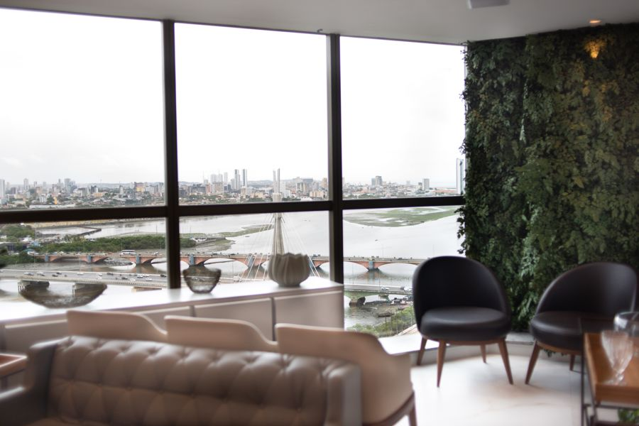
Ver em 3D01 · Vista do 19º andar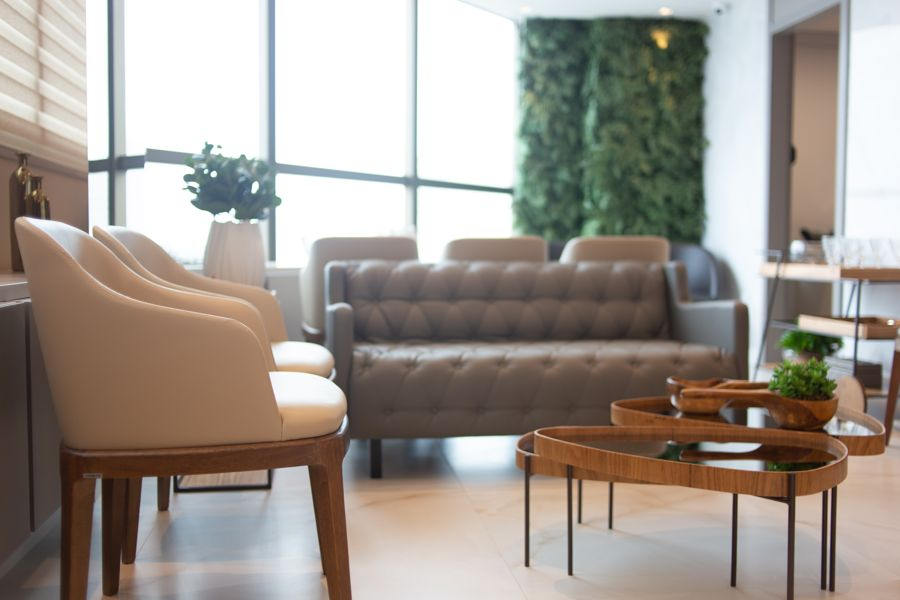
Ver em 3D02 · Lounge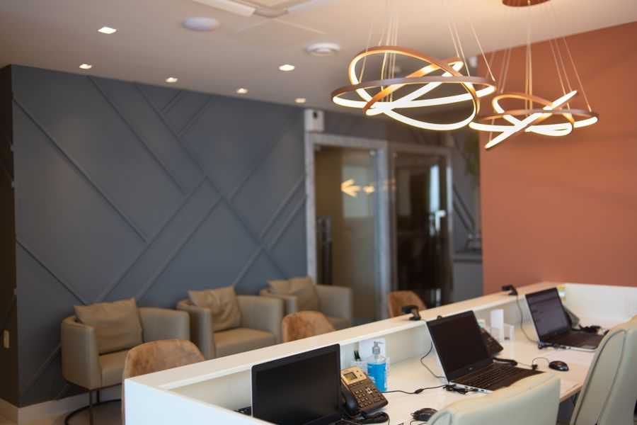
Ver em 3D03 · Recepção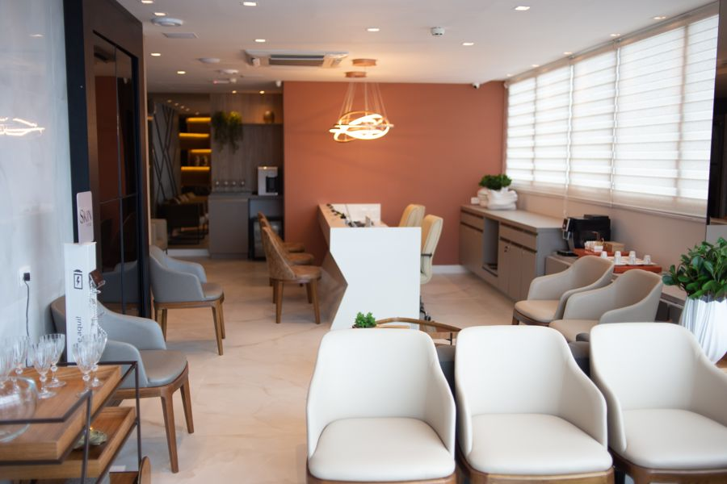
Ver em 3D04 · Sala de espera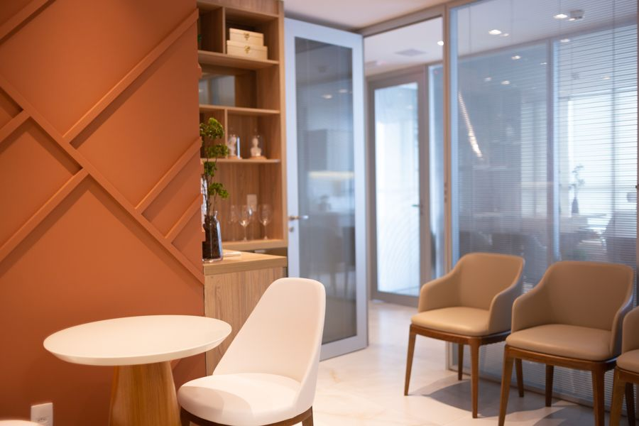
Ver em 3D05 · Café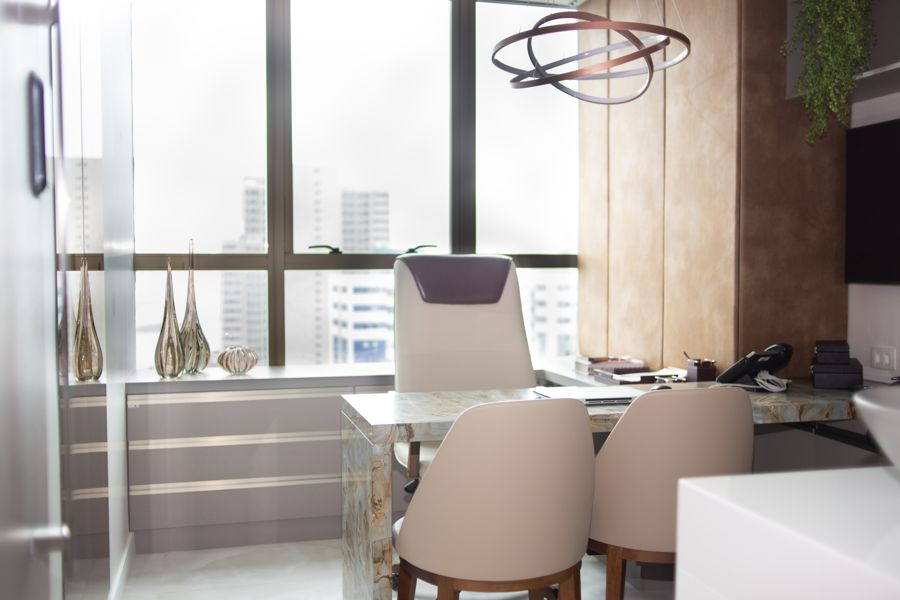
Ver em 3D06 · Consultório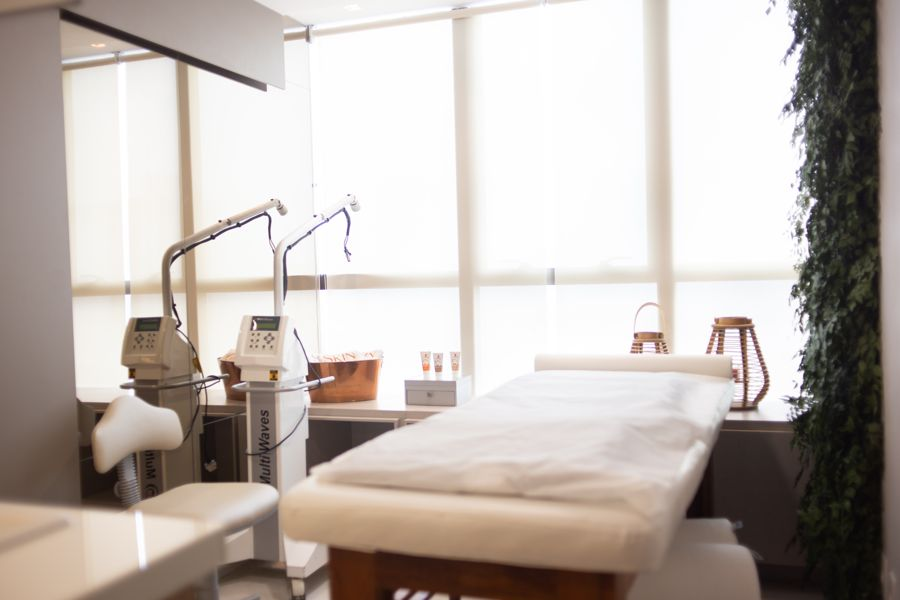
Ver em 3D07 · Sala de laser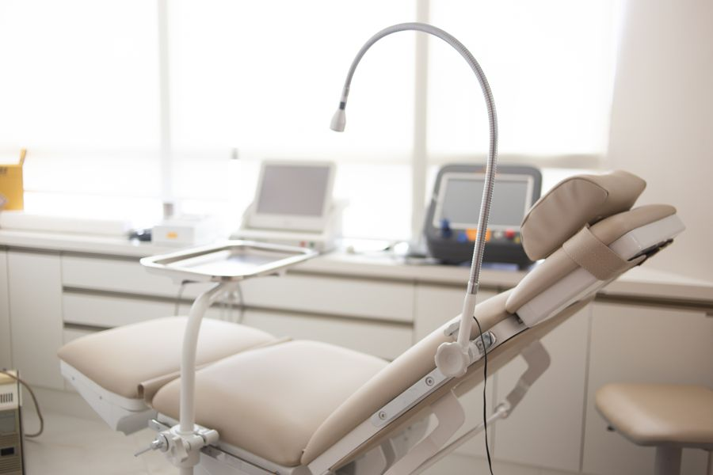
Ver em 3D08 · Sala de procedimentos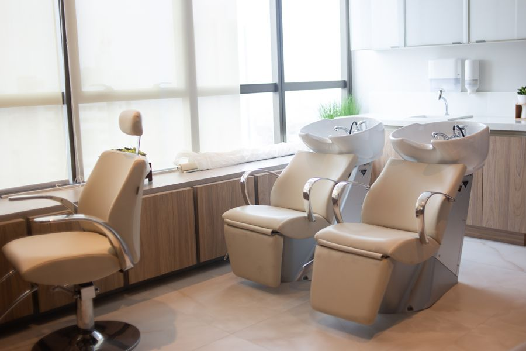
Ver em 3D09 · Terapia capilar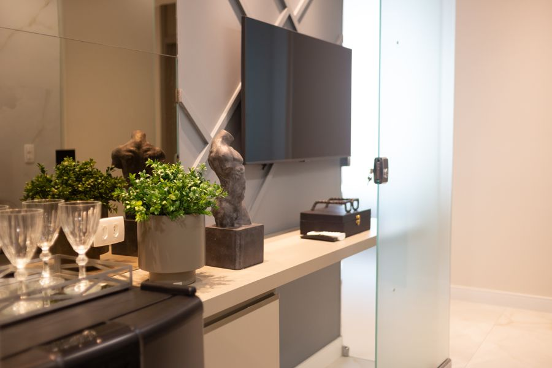
Ver em 3D10 · Detalhes“A Skin Prime é a concretização de um sonho, vai muito além de uma clínica humanizada. Aqui, cada mínimo detalhe foi pensado para oferecer o cuidado especial e personalizado que você merece.”Dr. Francisco Assis Filho · Dermatologista
Equipe
Dermatologistas, cirurgiões plásticos, fisioterapeutas, nutricionistas, nutrólogos, ginecologistas e esteticistas à sua disposição.
DermatologistaCRM 5999 · RQE 636
Sentir-se bem, física e mentalmente, é fantástico. A pele reflete isto.
Conhecer
DermatologistaCRM 18608 · RQE 4565
A matemática por trás dos tratamentos que realçam a beleza de cada um.
Conhecer
NutricionistaCRN 29209/P
Estar saudável por dentro para se ver mais bonito por fora.
Conhecer
DermatologistaCRM 26131 · RQE 11047
O futuro da sua pele ainda pode ser desenhado.
Conhecer
DermatologistaCRM 13132 · RQE 7642
Saúde, beleza e bem-estar com o rigor que a ciência pede.
Conhecer
DermatologistaCRM 16907
Rejuvenescimento elegante e seguro, com muita naturalidade.
ConhecerBiblioteca dermatológica
Um acervo de referência mantido pela clínica: doenças dermatológicas descritas em detalhe e um atlas de imagens clínicas.
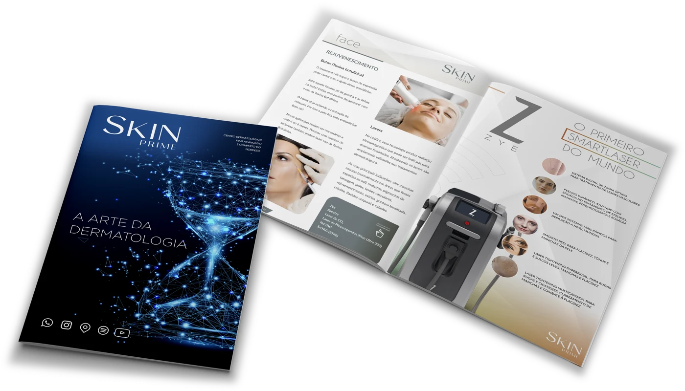
Revista digital
A arte da dermatologia em páginas: tecnologias, tratamentos e a visão dos nossos especialistas.
Abrir a revista (PDF)News
Novidades, tecnologias e orientações dos nossos dermatologistas.

Você sonha em ter uma pele mais firme, contornos faciais definidos e um corpo mais esculpido, sem procedimentos invasivos? A busca por resultados estéticos eficazes e seguros acaba aqui.Apresentamos o ATRIA II, a inovaçã

A alergia de contato é uma condição cutânea comum que afeta pessoas de todas as idades. Essa reação alérgica ocorre quando a pele entra em contato com substâncias irritantes ou alergênicas, desencadeando uma resposta inf

À medida que avançamos na idade, os cuidados com a pele se tornam ainda mais vitais para manter uma aparência saudável e radiante. A pele com mais de 60 anos requer atenção especializada para combater os efeitos do envel
Redes sociais
Últimas publicações no Instagram e no YouTube, além da nossa playlist no Spotify.
Contato
E faça parte da melhor experiência em saúde, beleza e bem-estar do Recife.